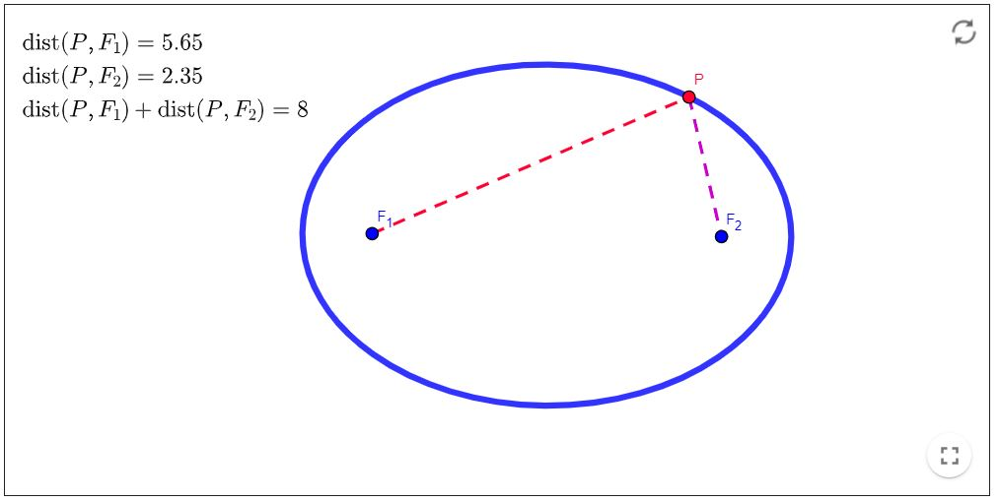
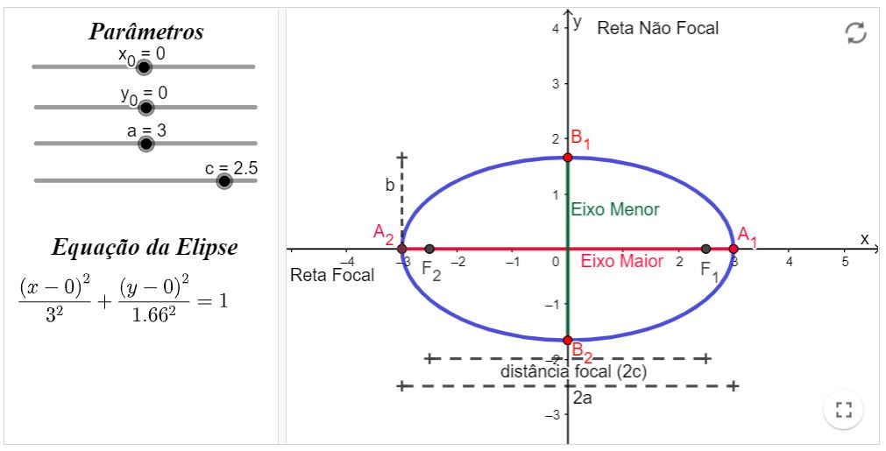
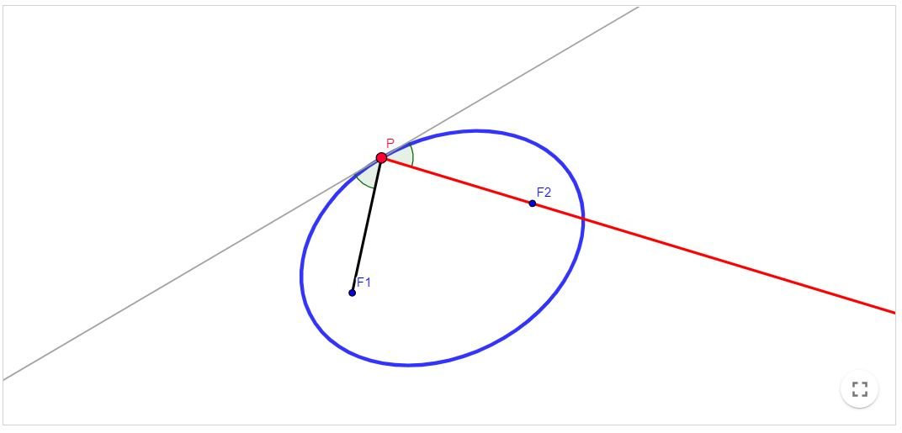
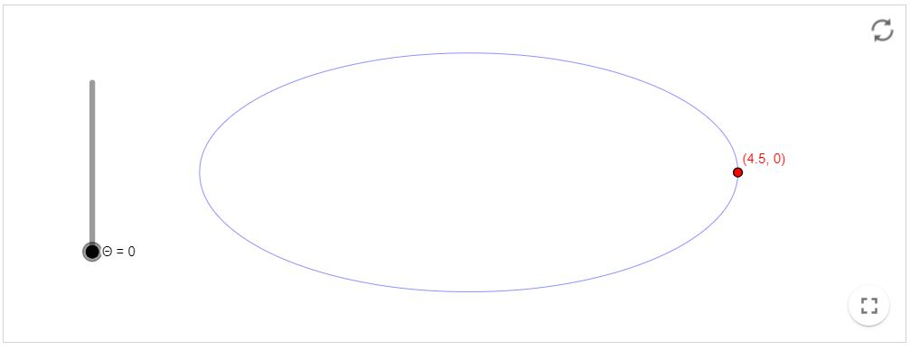

Revisão de Geometria Analítica
Elipse
Definição:
Conjunto dos pontos $P$ de um plano cujas distâncias a dois pontos fixos $F_{1}$ e $F_{2}$ desse plano têm soma constante $2 a$.
Elementos da Elipse
Atividade: altere os valores dos parâmetros (controles deslizantes) e observe o que acontece com gráfico elipse, bem como
com seus elementos. Observe também o que altera-se na esquação desta elipse. (Em recursos computacionais)
Propriedade de reflexão da Elipse
Seja $r$ a reta tangente no ponto $P$ de uma elipse de focos $F_{1}$ e $F_{2}$. Então os ângulos $\alpha$ e $\beta$ formados pela reta $r$ e os raios focais são iguais.
Em outras palavras, o resultado acima diz que se uma partícula sai de $F_{1}$ em direção a $P$, irá refletir na Elipse de forma a passar sobre o foco $F_{2}$.
Equações paramétricas da Elipse
Para obtermos equações paramétricas para a Elipse $\frac{\left(x-x_{0}\right)^{2}}{a^{2}}+\frac{\left(y-y_{0}\right)^{2}}{b^{2}}=1$,
consideremos primeiro a seguinte construção auxiliar (altere o controle deslizante "ETAPA" para visualizar a construção).
(Em recursos computacionais)
Chamemos de $\theta$ o ângulo interno do triângulo $C D E$ relativo ao vértice $C$. Note que o cateto adjacente a $\theta$ tem medida $x$, enquanto a hipotenusa do triângulo
tem medida $a$. Assim: $\cos \theta=\frac{C A}{H}=\frac{x-x_{0}}{a}$ ou ainda $x=x_{0}+a \cos (\theta)$
Substituindo na equação da elipse temos que
$$
\frac{\left(x_{0}+a \cos (\theta)-x_{0}\right)^{2}}{a^{2}}+\frac{\left(y-y_{0}\right)^{2}}{b^{2}}=1 \Longrightarrow \cos ^{2}(\theta)+\frac{\left(y-y_{0}\right)^{2}}{b^{2}}=1 \Longrightarrow\left(y-y_{0}\right)^{2}=b^{2}\left(1-\cos ^{2}(\theta)\right) \Longrightarrow y=y_{0}+b \operatorname{sen}(\theta)
$$
Portanto a Elipse pode ser descrita pelas seguintes equações paramétricas:
$$
\begin{aligned}
&x=x_{0}+a \cos (\theta) \\
&y=y_{0}+b \operatorname{sen}(\theta)
\end{aligned}
$$
Observe que o ângulo $\theta$ é o parâmetro das equações tal que $\theta \in[0,2 \pi]$. Isto é, para cada valor de $\theta$, obteremos diferentes pontos da Elipse. A construção
abaixo ilustra esta forma de descrever a elipse (varie os valores de $\theta$ ).
(Em recursos computacionais)
Recursos computacionais
Elipse - Definição
Livro Geogebra

Elipse - Elementos
Livro Geogebra

Elipse - Propriedade de reflexão
Livro Geogebra

Elipse - Equações Paramétricas I
- Construir uma elipse na forma $\frac{\left(x-x_{0}\right)^{2}}{a^{2}}+\frac{\left(y-y_{0}\right)^{2}}{b^{2}}=1$, e chamamos o centro desta elipse de $C$.
- Escolher um ponto $P=(x, y)$ sobre esta elipse.
- Construir circunferência $c$ de raio $a$ e centro $C=\left(x_{0}, y_{0}\right)$.
- Construir ponto $D=\left(x, y_{0}\right)$ onde $x$ é a primeira coordenada de $P$.
- Construir semireta $r$ que passa por $D$ e $P$.
- Encontrar $E=r \cap c$.
- Construir triângulo retângulo $C D E$. (voltar ao texto)
Elipse - Equações Paramétricas II
Livro Geogebra 